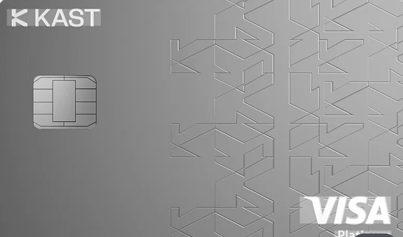
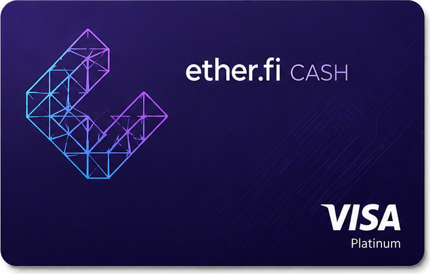
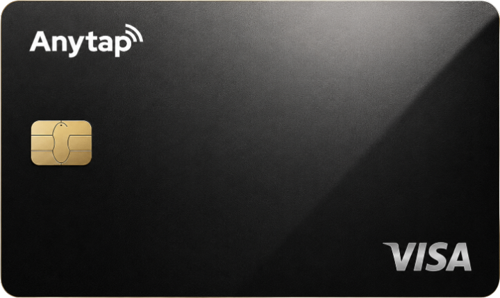

KAST
บัตรเน้นแคชแบ็ก- แคชแบ็ก
- 1.5% / 2% / 3% ตามระดับ เป็น USD
- ค่ารายปี
- 0 / 1,000 / 10,000 ดอลลาร์
- ค่า FX
- USD 0% · สกุลอื่น 0.5–1.75%
- ATM
- 3 ดอลลาร์ + 2%
ระดับพื้นฐานไม่มีค่ารายปี ได้ 1.5% สำหรับ 2,000 ดอลลาร์แรกต่อเดือน
อ่านรีวิว KAST →คุณต้องการบัตรแคชแบ็ก หรือบัตรเน้นฟังก์ชัน? การได้ทั้งสองอย่างพร้อมกันเป็นเรื่องยาก
บัตรคริปโตให้คุณใช้สเตเบิลคอยน์หรือคริปโตชำระเงินได้เหมือนบัตรทั่วไป ตัวเลขเดียวในโฆษณาไม่ได้บอกว่าคุณจ่ายจริงเท่าไร Crypto Cards Info ไม่ขายบัตร แต่จัดเรียงค่าธรรมเนียม อัตราแลกเปลี่ยน วงเงิน ฟังก์ชันโอนเงิน และเงื่อนไขแคชแบ็กด้วยมาตรฐานเดียวกันเพื่อให้คุณตัดสินใจเอง
ณ วันที่ 11 ตุลาคม 2026 · อ้างอิงเอกสารทางการและรีวิวสาธารณะ
โฆษณาบัตรคริปโตล้วนน่าสนใจ: “แคชแบ็กสูงสุด 3%” “ค่าธรรมเนียม 0%” “ไม่จำกัดวงเงิน” แต่แต่ละรายใช้เกณฑ์ต่างกัน ผู้ใช้จึงมักเลือกบัตรก่อนรู้ว่าควรเปรียบเทียบอะไร
เราไม่บอกว่าบัตรใดดีที่สุด แต่ช่วยให้คุณตอบสองคำถามด้วยตัวเอง: ฉันต้องการบัตรแคชแบ็กหรือบัตรเน้นฟังก์ชัน และฉันใช้บัตรคริปโตเพื่ออะไร
เมื่อเป้าหมายชัด ตัวเลือกจะแคบลงเอง และการเลือกอย่างชาญฉลาดก็เป็นไปได้
KAST และ Ether.fi Cash เป็นบัตรเน้นแคชแบ็ก ส่วน Anytap Card เป็นบัตรเน้นฟังก์ชันที่เน้นวงเงินและการเคลื่อนย้ายเงิน ออกแบบต่างวัตถุประสงค์จึงไม่อาจดีที่สุดพร้อมกัน
แคชแบ็กมักเป็นโปรโมชันที่ผู้ให้บริการเปลี่ยนหรือยกเลิกได้ตามข้อกำหนด ในปี 2026 KAST ก็เปลี่ยนรีวอร์ดแบบพอยต์/โทเคนเป็นแคชแบ็ก USD
ไม่มีรีวอร์ด ค่าเติมเงิน 2% และค่าชำระเงินจึงเป็นต้นทุนจริง ผู้ใช้จ่ายน้อยอาจคุ้มกว่าด้วยบัตรแคชแบ็ก

ระดับพื้นฐานไม่มีค่ารายปี ได้ 1.5% สำหรับ 2,000 ดอลลาร์แรกต่อเดือน
อ่านรีวิว KAST →
อัตราสูงสำหรับ 2,000 ดอลลาร์แรก จากนั้นลดลงเร็ว
อ่านรีวิว Ether.fi Cash →
เสริมวงเงินและฟังก์ชันวอลเล็ต/การโอนแทนแคชแบ็ก
อ่านรีวิว Anytap Card →ตัวเลขในโฆษณามักแสดงเพียงรายการเดียว ต้นทุนจริงคือค่าออกบัตร + ค่ารายปี + เติมเงิน + แปลงสกุล + ค่าแลกเปลี่ยนและสเปรด + ชำระต่างประเทศ + ATM ลบด้วยแคชแบ็กที่ได้รับจริง
แคชแบ็กที่คุณคิดว่าได้มา อาจเป็นเพียงส่วนหนึ่งของต้นทุนที่จ่ายไปแล้ว